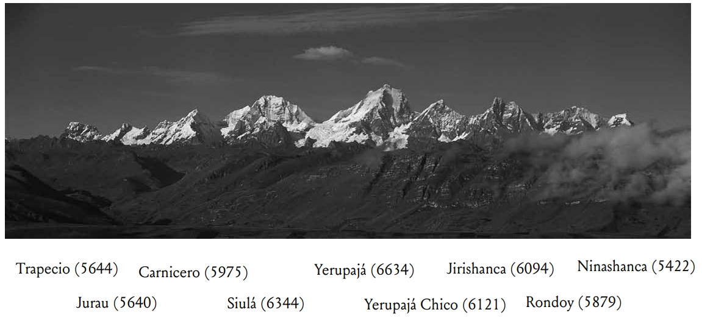
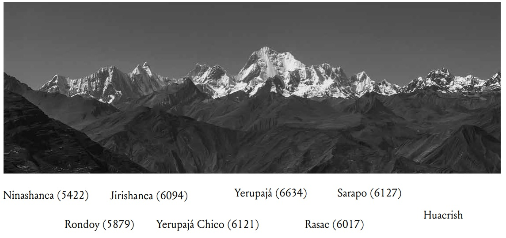
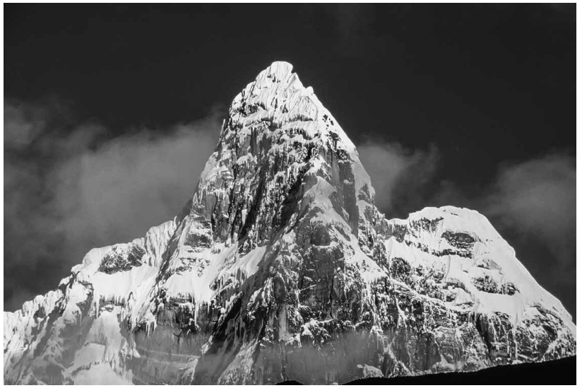
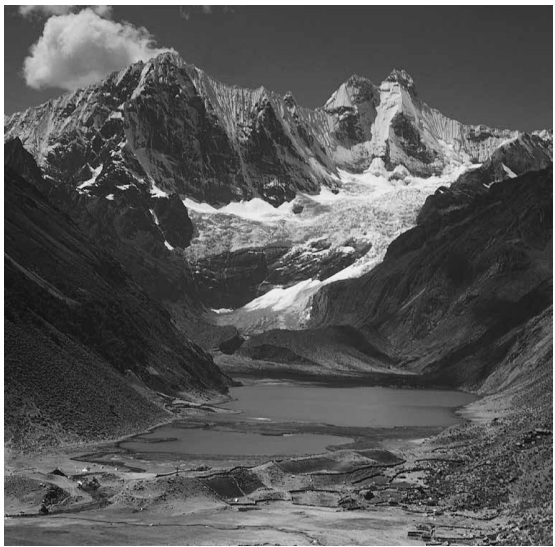

Crown of the Amazon

The Cordillera Huayhuash is one of the twenty glaciated cordilleras in the Peruvian Andes, located in north-central Peru Approximately fifty kilometers southeast of the more extensive Cordillera Blanca in the provinces of Bolognesi (Ancash), Cajatambo (Lima) and Lauricocha (Huanuco). The range is little more than thirty kilometers north to south, fundamentally one long ridge with a single spur of lower mountains extending to the west. From a distance it can appear to be a single great mountain—the 6634m Yerupaja, the second-highest in Peru and the highest point of the vast Amazon River watersher—surrounded by a few satellite peaks. But as one approaches more than a dozen serrated summits are revealed along the long ice-clad ridge, each distinct and beutifull in its own right.
Yet for all the grandeour of its peaks, the range is filled with smaller treasures: flowers of the greatest delicacy, crystalline lakes, a variety species of both resident and migratory birds. The terrain surrounding the Cordillera Huayhuash is more wide open than the Cordillera Blanca. Rather than deep canyons, the mountains are surrounded mostly by sloping grassy valleys and high rolling hills, especially on the wide-open eastern slope. Some of the Valleys to the northwest have extensive queñual (polylepis) forests, but the eastern and southern slops are largely treeless.
Booklet Contents
This booklet contains thirty-four photos of the Huayhuash taken between 1978 and 2024 by Jim Bartle and Matt Stacy, plus one photo from the 1954 book Cordillera Huayhuash—Peru by Hans Kinzl and Erwin Schneider, and one from 1954 from the arhcives of Peru's SAN(Serivicio Aerofotografico Nacional).
Some Exquisite pictures:




Cordillera, below Rondoy (5879m) and Jirishanca (6094m).